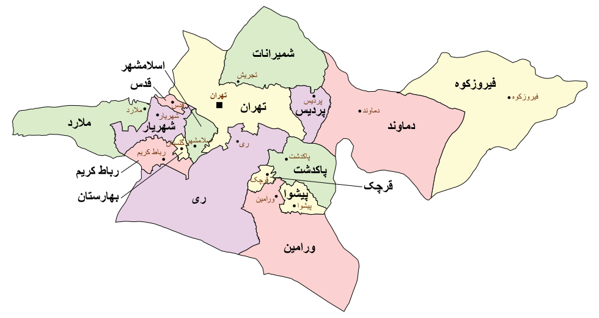
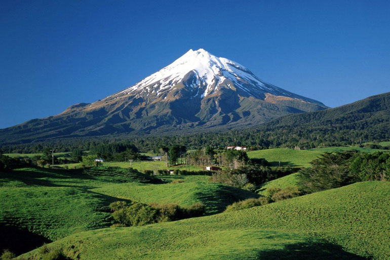
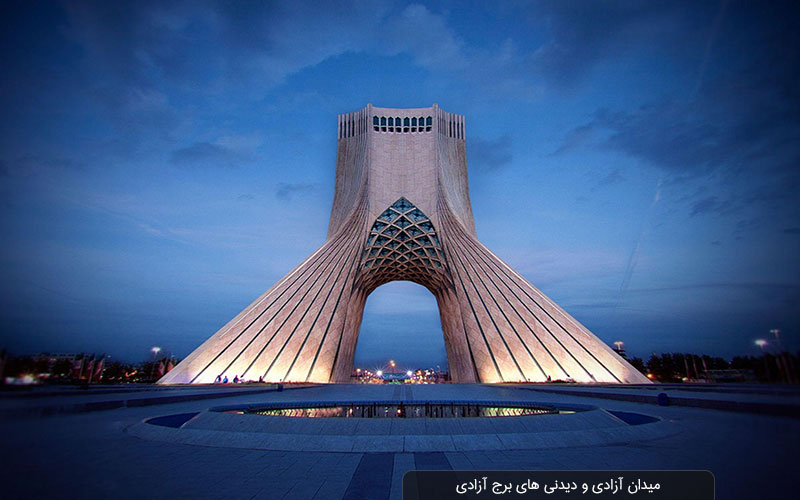
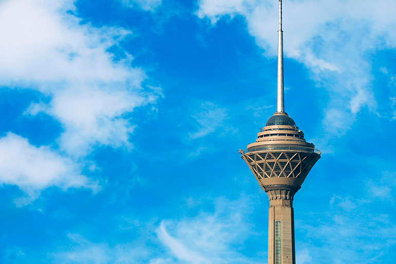
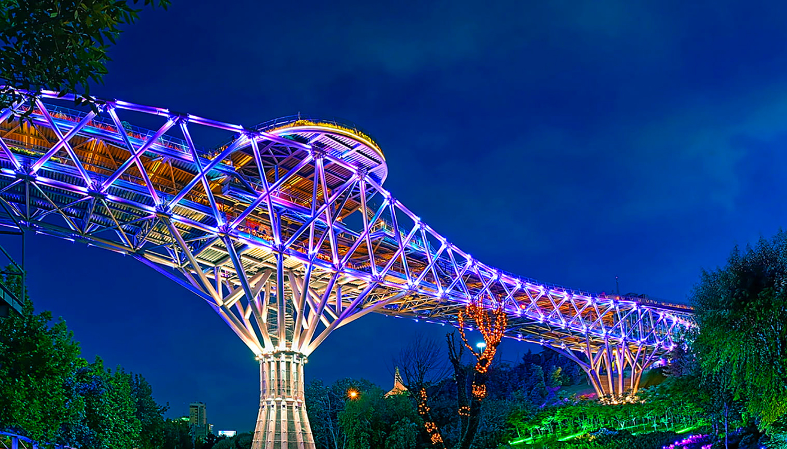

آمیزهای از شکوه تاریخ و شتاب مدرنیته در دامنهی البرز – تپش قلب ایران
کلانشهر تهران
۱۲٬۹۸۱ کیلومتر مربع
≈ ۱۴٫۵۵۷ میلیون نفر
شهر ۷۲ ملت – تپش قلب ایران
تهران از دوران قاجار تاکنون، قلب سیاسی، اداری و اقتصادی ایران بوده است. این استان با تمرکز مراکز علمی، صنعتی، فرهنگی و مالی، مهمترین قطب کشور محسوب میشود. از محلههای قدیمی با کوچهپسکوچههای خاطرهانگیز تا آسمانخراشها و بزرگراههای مدرن، تهران نماد گذار ایران از سنت به مدرنیته است.

نمایش تهران روی نقشهتهران در دامنه جنوبی البرز قرار دارد و تنوع اقلیمی چشمگیری دارد: شمال استان با شمیرانات و توچال کوهستانی و خنک است، در حالی که جنوب به دشتهای نیمهبیابانی میرسد. قله دماوند، بلندترین نقطه ایران، نماد باشکوه این استان است و ریه تنفسی کلانشهر شلوغ به شمار میرود.

از برج آزادی به عنوان دروازه تمدن تا برج میلاد (ششمین برج مخابراتی بلند جهان) و پل طبیعت (شاهکار معماری معاصر)، تهران ترکیبی بینظیر از تاریخ، هنر و نوآوری است.

برج آزادی
برج میلاد
پل طبیعتقدیمیترین مجموعهی تاریخی تهران و مقر قاجاریان؛ ثبت جهانی ۲۰۱۳.
با ارتفاع حدود ۴۳۵ متر از نمادهای مدرن پایتخت و دارای تماشاخانهی پانوراما.
در سال ۱۳۵۰ برای جشنهای ۲۵۰۰ ساله ساخته شد و دروازهی نمادین شهر است.
پل عابر پیادهی مشهور میان دو بوستان آبوآتش و طالقانی (افتتاح ۱۳۹۳).
پیستها، تلهکابین و مسیرهای کوهپیمایی در دامنهی البرز، در دسترس از شهر.
مجموعهای تودرتو از راستهها، سراها و حجرههای تاریخی.
میزبان مهمترین آثار باستانی از دوران پیش از تاریخ تا اسلامی.
گنجینهای از جواهرات سلطنتی، از جمله دریای نور و تخت طاووس.
تهران ترکیبی از آشپزی همهی استانهاست. قدیمیترین رستورانها و قهوهخانهها در محدودهی بازار و خیابانهای مرکزی شهر باقی ماندهاند.